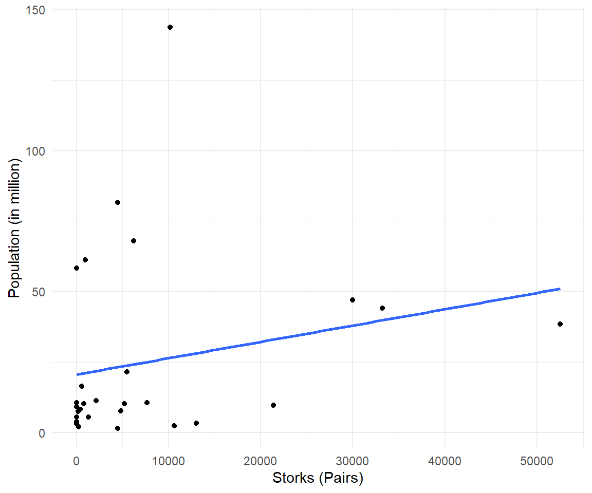
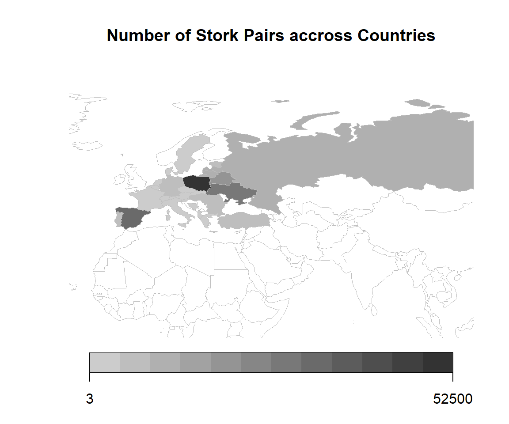

Chapter 11 Compare
Relationships, means, and variation
11.1 Relationships
Variance, covariance, and correlation
“[M]y ally is the Force, and a powerful ally it is. Life creates it, makes it grow. Its energy surrounds us, binds us. Luminous beings are we, not this crude matter. You must feel the Force flow around you. Here, between you, me, the tree, the rock, yes, even between the land and the ship.”
"I'm not talking about pagan voodoo here - I'm talking about something REAL and measurable in the biology of the forest. What we think we know is that there's some kind of electrochemical communication between the roots of the trees, like the synapses between neurons. Each tree has ten to the fourth connections to the trees around it, and there are ten to the twelfth trees on Pandora. That's more connections than the human brain. It's a network - a global network. The Na'vi can access it, they can upload and download data - memories - at sites like the one you just destroyed."
Welcome to a chapter where we explore the connections that make our social world tick. Think about how Yoda talks about the Force binding everything in the Star Wars galaxy and how Dr. Grace Augustine explains the real, measurable connections in Pandora's forest. Well, social scientists do something similar in our world – we study the relationships that shape our lives.
A relationship is the way in which two or more concepts are connected. Consider these examples: Can money truly bring happiness (Easterlin 1973)? Intriguing examples abound, such as exploring the relationship between social media use and sleep quality (Alonzo et al. 2021), investigating the impact of attachment styles on adult romantic relationships (Feeney and Noller 1990), and studying the interplay between gender diversity and team performance (Schneid et al. 2015). Additionally, researchers investigate the connection between parental involvement and academic achievement (Wilder 2014), and scrutinize how perceived crime levels influence quality of life (Kitchen and Williams 2010). The study conducted by Heim and Heim (2023) further delves into the secrets behind enduring relationships, with younger couples seeking insights on factors like commitment, altruism, shared values, good communication, compromise, love, and persistence from older couples with over 40 years of marriage experience (Heim and Heim 2023).
11.1.1 Storks Deliver Babies

Figure 11.1: Stork bringing baby - Colmar, Alsace.
The relationship between the number of storks and the human population is a classic example used to illustrate that correlation does not imply causation (Matthews 2000). It is based on the familiar folk tale that babies are delivered by storks. People noticed a positive correlation between the number of storks in an area or country and the number of human babies born. Stork populations and human populations seem to increase or decrease together.
Although storks are not responsible for delivering babies, a careless interpretation of correlation and p-values can lead to unreliable conclusions.
International White Stork Census
The first International White Stork Census was initiated by Prof. Ernst Schüz in 1934 and thus has a long history. Since 1974, it has taken place at ten-yearly intervals. So far, it has been possible to enthuse countless ornithologists and people interested in protecting White Storks to record their numbers at regular intervals.
We have raw data on stork population from the Results of the 6th International White Stork Census 2004/2005 for 28 countries in 2005 as well as figures for human population.
Storks is the number of pairs of storks in that country. The Area is in square kilometers. Population is the total population in million whereas UrbanPop is the population living in urban areas. Fertility refers to the total fertility rate, that is the average number of children that would be born to a female over their lifetime. How many storks have been observed in Ukraine in 2005? Answer: . Which country has more storks?
The following table shows some key characteristics of the data, i.e. the minimum and maximum (which define the range) and average value of each numeric variable. It further provides a tiny histogram of the variables distribution.
| Min | Mean | Max | Histogram | |
|---|---|---|---|---|
| Storks | 3.00 | 7718.36 | 52500.00 | ▇▂▁ |
| Area | 20273.00 | 801740.96 | 17075200.00 | ▇ |
| Population | 1.36 | 25.03 | 143.67 | ▇▁▁▁▁ |
| Fertility | 1.15 | 1.44 | 2.37 | ▄▇▁▂▁▁▁ |
| UrbanPop | 0.93 | 17.88 | 105.51 | ▇▁▁▁▁ |
11.1.2 Statistics
Before venturing into specific inquiries, it is essential to establish a solid foundation by introducing key concepts such as variance, covariance, correlation, and levels of measurement. The understanding of variance is paramount as it provides valuable insights into the degree of variability within a variable. Covariance, the measure of how two variables change together, assumes a pivotal role in unveiling the direction of association between them. The standardized measure of association, correlation, plays a central role in quantifying the strength and direction of relationships.
11.1.2.1 Variance
The map shows the number of stork pairs for the selected countries. Looks like storks like certain countries more than others.

The range goes from 3 pairs in Albania to pairs of storks in Poland. There is high variability in the number of storks. The variance is a measure for variability of data.
Definition
The variance is defined as the average quadratic deviation from the mean.
The term variance was first introduced by Ronald Fisher in his 1918 paper  The Correlation Between Relatives on the Supposition of Mendelian Inheritance.
The Correlation Between Relatives on the Supposition of Mendelian Inheritance.
\[var(x) = \frac{1}{n-1} \sum (x_i - \overline{x} )^2\]
To calculate the variance, we subtract each data point \(x_i\) from the mean \(\overline{x}\). Then square those deviations and add them up. Finally, there is a scaling factor, we divide by the number of observations minus 1.
The variance of Storks and can be calculated via var() in R. It is 154084389. 150 million of what? The variance is in squared unit, i.e. square storks and thus hard to interpret.
Truly Dedicated: Population vs. Sample
When you collect data from every member of the population that you’re interested in, you can get an exact value for population variance. When you collect data from a sample, the sample variance is used to make estimates or inferences about the population variance. Sample variance is divided by \(n-1\). Population variance is divided by \(n\).
Please try mental calculation. What is the variance of 3, 5, 7, 9 and 11? Answer: .
11.1.2.2 Standard Deviation
The standard deviation is derived from variance and tells, on average, how far each value lies from the mean. Variance and standard deviation both measure the variability of a variable. The standard deviation is the square root of variance.
\[sd(x) = \sqrt{var(x)} = \sqrt{ \frac{\sum (x_i - \overline{x} )^2}{n-1} } \]
In R, the standard deviation is calculated by sd() like sd(storks$Storks) which yields 12413. The mean of storks mean(storks$Storks) is approximately 7718. The one-dimensional variable Storks is visualized as points on the line.

Truly Dedicated: Empirical Rule
In statistics, the empirical rule states that
- 68% of the observed data will occur within the first standard deviation,
- 95% will take place in the second deviation and
- 99.7% within the third standard deviation
See  68–95–99.7 rule for more information.
68–95–99.7 rule for more information.
Well, the empirical rule assumes that the data follows a perfectly symmetric bell-shaped curve with no constraints on the range of possible values. In reality, many variables have natural constraints, such as a floor (minimum value) or a ceiling (maximum value). For example, age cannot be negative, so it has a natural floor of zero. Similarly, test scores might have a maximum possible value, such as 100%.
Again, the standard deviation of storks is 12413. Given the graph and the table with raw data, can you tell how many percent of the stork data lies with one standard deviation on each side of the mean? Answer: .
The following scatterplot shows the number of storks and the population with their respective means as bold red lines.

Now, that we know how to describe the variation of each of the two variables, we look for a measure that reflects the co-variation of both variables, i.e. how they change in relation to each other. The new grid of means is a good starting point. When most data points fall into lower left and upper right quadrant, we call this a positive relationship.
11.1.2.3 Covariance
Covariance is a measure of the joint variability of two variables. The main idea of covariance is to classify three types of relationships: positive, negative or no relationship.
Definition
The covariance between two variables is the product of the deviations of x and y from their respective means.
\[cov(x,y) = \frac{1}{n-1} \sum\limits (x_i - \bar{x})(y_i - \bar{y})\]
For each data point, we multiply the differences with the respective mean. Geometrically, this results in several rectangular areas starting at the intersection of means as a new origin. The covariance sums up all these areas. Finally, the covariance is adjusted by the number of observations. When both values are smaller or greater than the mean, the result will be positive.
In R, the covariance is calculated by cov(storks$Storks, storks$Population) and yields 89235. The positive covariance confirms what we saw in the first scatterplot, the positive association between storks and population. Let's try to visualize the calculation procedure of the covariance.

Your Turn
Can you validate the covariance result from cov(x,y) from the sum of squares from the figure?
Covariance qualifies a relationship as positive or negative, i.e. the direction of the relationship. Covariance is expressed in units that vary with the data. Because the data are not standardized, you cannot use the covariance statistic to assess the strength of a linear relationship (a covariance of 117.5 can be very low for one relationship and 0.23 very high for another relationship).
We need a measure independent of units in a fixed range, the correlation coefficient.
11.1.2.4 Correlation
To assess the strength of a relationship between two variables a correlation coefficient is commonly used. It brings variation to a standardized scale between -1 to +1.
Definition
The correlation coefficient is a statistical measure of the strength and direction of the relationship between two variables.
\[r(x,y) = \frac{\sum\limits (x_i - \bar{x})(y_i - \bar{y})}{\sqrt{\sum\limits (x_i - \bar{x})^2 \sum\limits (y_i - \bar{y})^2}}\]
Does the numerator and denominator remind you of something? The formula is made of the components variance and covariance. Thus, the correlation coefficient formula is often expressed in short as:
\[r(x,y,) = \frac{Cov(x,y)}{\sqrt{Var(x) Var(y)}}\]
cor() is a basic function to calculate the correlation coefficient.
The correlation coefficients confirms ones more, there is a positive relationship. You will find thresholds for different fields of research that classify the magnitude of the correlation coefficient as weak, moderate and strong. Social science usually accept lower correlation values to be meaningful. One possible classification could be:
- above 0.4 is strong
- between 0.2 and 0.4 is moderate,
- and those below 0.2 are considered weak.
Thus we may consider the stork-population-relationship as weak to moderate. Keep in mind that these thresholds are not set in stone. Now, let's turn to cor.test(), a more sophisticated version including a hypothesis test.
# Advanced function
cor.test(storks$Storks, storks$Population)
#>
#> Pearson's product-moment correlation
#>
#> data: storks$Storks and storks$Population
#> t = 1.1495, df = 26, p-value = 0.2608
#> alternative hypothesis: true correlation is not equal to 0
#> 95 percent confidence interval:
#> -0.1668487 0.5480307
#> sample estimates:
#> cor
#> 0.2199176The correlation test is based on a t-value (t = 1.1495056) and returns a p-value (0.2608121) for statistical significance.
Definition
The p value is a statistical measure to determine whether the results of a statistical analysis are statistically significant or if they could have occurred due to random chance.
Small p-values below 0.05 are usually considered to be statistically significant. This is not the case for our stork-population relationship.
11.1.2.5 An Early Glimpse into Regression
Now, let's consolidate our understanding with a minimal example. Consider 5 observations for two variables, \(x = (4, 13, 19, 25, 29)\) and \(y = (10, 12, 28, 32, 38)\). To compute the variance for each variable, we follow a simple process: subtract the mean, square the difference, and sum the results. The mean of \(x\) is while the mean of \(y\) is .
\[ \begin{aligned} \text{var}(x) &= \frac{1}{4} ( (4 - 18)^2 + (13 - 18)^2 + (19 - 18)^2 + (25 - 18)^2 + (29 - 18)^2) \\ \text{var}(x) &= \frac{1}{4} ( (-14)^2 + (-5)^2 + (1)^2 + (7)^2 + (11)^2) \\ \text{var}(x) &= \frac{1}{4} ( 196 + 25 + 1 + 49 + 121) = \frac{1}{4} (196 + 75 + 121) = \frac{1}{4} (392) \\ \text{var}(x) &= \frac{1}{4} (392) = 98 \end{aligned} \]
We then calculate the covariance of \(x\) and \(y\). Given the variances and the covariance, we can calculate the correlation coefficient of the two variables.
Now, there is another concept for measuring the connection between two variables: The regression coefficient. Don't worry, for the moment you just need to know that there is an interesting connection between the two.
\[\beta_{x \rightarrow y} = r_{x,y} \cdot \frac{\sigma_y}{\sigma_x} \]
The correlation coefficient is the same value no matter the order of the variables. It is symmetric, i.e. the correlation between variables \(x\) and \(y\) is the same as the correlation between \(y\) and \(x\). However, the regression coefficient is a bit picky. It does care about the order of things. If you swap the roles of the dependent (\(y\)) and independent variables (\(x\)), the regression coefficient changes. So, it's like having a favorite direction – it matters which way you're looking when interpreting the relationship.
| Observation | x | y | $\text{var}(x)$ | $\text{var}(y)$ | $\text{cov}(x, y)$ | $r_{xy}$ | $\beta_{x \rightarrow y}$ |
|---|---|---|---|---|---|---|---|
| 1 | 4 | 10 | 98 | 154 | 118 | 0.956 | 1.2 |
| 2 | 13 | 12 | 98 | 154 | 118 | 0.956 | 1.2 |
| 3 | 19 | 28 | 98 | 154 | 118 | 0.956 | 1.2 |
| 4 | 25 | 32 | 98 | 154 | 118 | 0.956 | 1.2 |
| 5 | 29 | 38 | 98 | 154 | 118 | 0.956 | 1.2 |
Notably, if the standard deviations (\(\sigma\)) of the two variables are equal, the correlation coefficient and the simple regression coefficient coincide. We can achieve this when variables are on the same scale. The most common way of achieving this is through standardization.
Standardization is a crucial process in statistics that harmonizes variables by centering them around a mean of 0 and scaling them to have a standard deviation of 1. This transformation ensures that variables operate on a uniform scale, facilitating meaningful comparisons. The standardization formula is expressed as:
\[ z = \frac{x - \bar{x}}{\sigma} \]
By subtracting each data point from the mean and dividing by the standard deviation, we create a standardized variable that simplifies the interpretation and comparison of different datasets. The same calculation based on scaled data:
| Observation | $z_x$ | $z_y$ | $\text{var}(z_x)$ | $\text{var}(z_y)$ | $\text{cov}(z_x, z_y)$ | $r_{z_x z_y}$ | $\beta_{z_x \rightarrow z_y}$ |
|---|---|---|---|---|---|---|---|
| 1 | -1.414 | -1.128 | 1 | 1 | 0.956 | 0.956 | 0.956 |
| 2 | -0.505 | -0.967 | 1 | 1 | 0.956 | 0.956 | 0.956 |
| 3 | 0.101 | 0.322 | 1 | 1 | 0.956 | 0.956 | 0.956 |
| 4 | 0.707 | 0.645 | 1 | 1 | 0.956 | 0.956 | 0.956 |
| 5 | 1.111 | 1.128 | 1 | 1 | 0.956 | 0.956 | 0.956 |
11.1.3 Visualizations
In our example, we explored the stork-baby relationship by measuring the number of stork pairs and human population as continuous variables. Using a scatter plot, we depict their connection as dots on a graph. We also try another way by changing one of the continuous things into groups, like putting them in boxes. We then use a barplot to show this connection. This helps us see both the detailed view of the continuous things and the simpler picture when we group them. It gives readers a good understanding of how things are related in different ways.
11.1.3.1 Storks and Population in a Scatterplot
The scatterplot is a two-dimensional instrument that shows the number of storks on the x-axis and the population on the y-axis. The blue line illustrates the linear trend between the variables. Since its slope is increasing, it suggests a positive connection between storks and population, i.e. countries with more pairs of storks also tend to have a higher population.

The data doesn't cluster in a nice dot cloud but is spread out in both directions. While some countries only have a hand full of storks, others have tens of thousands. Let's explore this in more detail.
11.1.3.2 Storks and Population in a Barplot
A barplot is a graphical representation of categorical data where individual bars correspond to different categories, and the length of each bar represents the frequency or value associated with that category.
To illustrate the relationship in a barplot, the number of storks is transformed from a continuous variable to a categorical ordered variable. Stork numbers are grouped into four equal parts (quartiles). For each part, the mean number of population is calculated.

In the first quartile are countries with a range of stork numbers between 3 and 198. For all those countries the average population is about 14 million.
11.1.3.3 Storks and Area
we should also consider area when talking about the stork population relationship. since Additionally, considerations of geographical area size reveal potential confounding factors, where larger areas might exhibit both more storks and higher human populations.
Logarithmic transformations are particularly useful for variables that exhibit skewed distributions, large ranges, or multiplicative relationships. Examples include income, where logarithmic transformation can help normalize the data, making it more symmetric. Population growth rates are often better visualized on a log scale due to their multiplicative nature. Stock prices, influenced by exponential growth or decay, benefit from log scales to highlight percentage changes and identify trends.
This compression can be particularly useful when you have extreme values that would otherwise make the visualization challenging.
 #### Storks and Urban Population
#### Storks and Urban Population
Examining the stork-baby relationship in light of the share of urban population provides a more nuanced understanding of the observed correlation. The positive link between stork population and human population may be influenced by several factors.
Storks, as wild creatures, are significantly affected by shifts in habitat due to urbanization. This correlation analysis helps unravel the intricate dynamics of how changes in human habitat impact stork habitats.
Urbanization emerges as another influential factor, with urban areas typically hosting fewer storks but higher human populations, potentially confounding the relationship. Moreover, environmental changes, such as deforestation or urban development, may impact both stork habitats and human populations, introducing confounding variables that could mislead interpretations, making it appear as if storks influence human births. This comprehensive exploration highlights the complexity of the stork-baby relationship and the importance of considering multiple factors for a more accurate interpretation.
Integrating information on the share of urban population into the analysis of the stork-baby relationship offers a more nuanced perspective on the observed correlation. The positive link between stork population and the proportion of urban residents may stem from various contributing factors:
Storks, being wild creatures, can be significantly affected by shifts in habitat resulting from urbanization. Evaluating the correlation between the share of urban population and stork populations aids in understanding the impact of changes in human habitat on stork habitats.

11.1.4 Spurious Relationships

Figure 11.2: The first known pair in Finland (2015), representing a northward expansion compared to the species' historical breeding range.
In the stork and baby relationship, the observed correlation between stork populations and birth rates could be influenced by common causes, such as geographical area and urbanization. Let's delve into these common causes:
Larger geographical areas might exhibit both more storks and higher human populations. This is not necessarily because storks directly influence birth rates, but rather because larger areas can accommodate larger stork populations and, simultaneously, support higher human populations.
Urban areas tend to have fewer storks but higher human populations. Urbanization can alter habitats and make urban areas less conducive to stork populations, while it concentrates human populations in the same regions.
Reading Skill and Shoe Size: - Variables: Reading skill and shoe size. - Confounding Variable: Age. - Correlation Explanation: Age serves as a confounding variable, influencing both reading skill development and physical growth (shoe size).
Ice Cream Sales and Drowning Incidents: - Variables: Ice cream sales and drowning incidents. - Confounding Variable: Temperature. - Correlation Explanation: Temperature is a confounding variable, affecting both ice cream sales and the number of drowning incidents.
Number of TVs per Household and Life Expectancy: - Variables: Number of TVs per household and life expectancy. - Confounding Variable: Socioeconomic status. - Correlation Explanation: Socioeconomic status is a confounding variable, affecting both the number of TVs owned and life expectancy.
11.2 Comparing Means
One mean, two independent groups, and paired observations
"The brewer wants to know how confident he can be that the barley in his hand is as good as the sample he tested. He cannot test it all. He cannot even test much of it."
Section 11.1 asked whether two variables move together. This section asks something even more elementary, and even more common: is this average different from that one? Do women and men arrive in this course with different statistics backgrounds? Are Master students older than Bachelor students? Does the same student rate two of their own skills differently? Almost every empirical claim you will ever read — about wages, treatments, test scores, attitudes — is at bottom a comparison of means. This section is about when such a comparison can be trusted.
11.2.1 A brewer invents modern statistics
In 1899 the Guinness brewery in Dublin hired a young Oxford chemist named William Sealy Gosset. His job was quality: barley, hops, and beer vary, and Guinness wanted to know which barley varieties were genuinely better rather than luckier. The problem was the sample size. A brewery experiment might yield four observations — four plots, four malt extracts — and the statistical theory of the day, built for hundreds of observations by astronomers, quietly fell apart at \(n = 4\).76
Gosset worked out how the average of a small sample behaves, publishing the result in Biometrika in 1908 as "The probable error of a mean". He could not publish under his own name: Guinness barred its scientists from publishing after an earlier paper had given away information competitors could exploit. So the paper appeared under a pseudonym, and the most-used distribution in applied statistics is named after that pseudonym rather than its author: Student.77
The tool you will use for every test in this section was invented not by a professor with unlimited data, but by a brewer who could afford almost none. That is worth remembering: the t-test is a tool for honest uncertainty about small evidence. When samples are large, it barely matters; when samples are small, it is the difference between knowledge and wishful thinking.
Gosset originally called his statistic \(z\). The letter \(t\) came later, through Fisher's reworking of the theory.
11.2.2 The data: seven cohorts of students
The examples in this section and the next use one dataset, so it is worth introducing properly. On the first day of every term from summer 2020 to winter 2023/24, students in this seminar filled in the same short questionnaire before anything was taught. Seven cohorts, 233 usable responses.78
Alongside term, gender, academic level, age and total semesters studied, three items asked students to rate their own background on a five-point scale anchored at 1 = Beginner and 5 = Advanced:
Background in Statistics — Please rate your background knowledge in statistics.
Background in R — Please rate your background knowledge in R programming.
Background in Academic Writing — Please rate your background knowledge in academic writing.
A fourth, open-ended item asked What do you expect to learn in this seminar? — text rather than a number, and therefore material for the chapter on text data rather than for a t-test.
library(tidyverse)
coursedata <- read.csv("data/Course/GF_AllTime.csv", sep = ";") %>%
filter(Age < 100)
dim(coursedata)
#> [1] 233 9Three features of this data shape everything that follows. The three ratings are self-assessments, not tests: they measure confidence as much as competence, which is exactly what makes the gender comparison below interesting rather than trivial. The scale is bounded at 1 and 5, so a group already near an endpoint has less room to move. And the three items were answered by the same person, which is what makes the paired comparison in section 11.2.6 possible at all.
11.2.3 Signal and noise
Every test in this section is the same fraction wearing three different coats:
\[t = \frac{\text{signal}}{\text{noise}} = \frac{\text{difference we observed}}{\text{difference we would expect from chance alone}}\]
The numerator is an estimate — a mean minus a benchmark, or one group mean minus another. The denominator is that estimate's standard error: how much the number would wobble if we could rerun the sampling again and again.
Definition
The standard error of the mean is the standard deviation of the sampling distribution of the mean:
\[se(\bar{x}) = \frac{sd(x)}{\sqrt{n}}\]
It shrinks with \(\sqrt{n}\): four times the data buys half the wobble.
11.2.3.1 Deviation and error are not the same word
The two quantities differ by a single square root, and confusing them is one of the most common mistakes in reading empirical results. It is worth slowing down here, because the mistake is not arithmetic — it is a mistake about what the number is describing.
The standard deviation describes the people. It answers: how far is a typical individual from the average? It is a fact about the world, and it does not get smaller when you collect more data. Ask a thousand more students their age and students still differ from one another by about four years.
The standard error describes your knowledge. It answers: how far is my estimate of the average likely to be from the truth? It is a fact about your evidence, and it does get smaller as you collect more — that is the entire reason to collect more.
| Standard deviation | Standard error | |
|---|---|---|
| Question it answers | How much do individuals differ? | How precise is my estimate? |
| It describes | the population | your uncertainty |
| More data... | leaves it roughly unchanged | shrinks it by a factor √n |
| Use it when | describing your sample | testing or estimating a mean |
The picture makes it concrete, and it is drawn the same way as the storks in section 11.1: the red line is the mean, and the arrows step out one unit of spread on each side.

Figure 11.3: Individuals scatter widely (a); their averages barely move (b). The standard deviation measures the first picture, the standard error the second.
Panel a shows the 233 students one at a time. The mean is 25.0 years and the standard deviation is 3.7, so the arrows reach from 21.3 to 28.7 — and by the empirical rule from section 11.1 we would expect roughly 68% of students to fall inside that band. In this data 70.4% do, which is about as close to the textbook as real, floor-bounded age data ever gets.
Panel b repeats the exercise for averages: draw 25 students, record only their mean age, repeat. Those averages have a standard deviation of their own — that is the standard error — and it is 0.7 years. Same students, same horizontal scale, a spread five times narrower, because \(\sqrt{25} = 5\).
sd(coursedata$Age) # how much students differ
#> [1] 3.705614
sd(coursedata$Age) / sqrt(nrow(coursedata)) # how well we know their average
#> [1] 0.2427628Because the two are linked by \(\sqrt{n}\), the ratio between them is fixed by the sample size alone. With 233 students, \(\sqrt{233} = 15.3\), so every variable in this file has a standard error exactly 15.3 times smaller than its standard deviation — age, statistics rating, R rating, all of them. Nothing about the variable matters. Only \(n\) does.
Professionals get this wrong, in print
This is not a beginner's slip. Peter Nagele went through all 860 research articles published in four anaesthesia journals in 2001 and found that 198 of them — 23%, nearly one in four — used the standard error of the mean where they should have used the standard deviation, reporting the precision of an average as if it were the variability of patients.79
Why does the mistake run in that direction? Because the standard error is always the smaller number. Reporting "mean ± 0.24" instead of "mean ± 3.71" makes any result look tidier, and no reviewer can tell from the figure alone which one you used.
The misreading runs deeper than reporting. Belia, Fidler, Williams and Cumming e-mailed the authors of articles in leading psychology, neuroscience and medicine journals and asked 473 of them to position error bars at the point where two means would be just significantly different. Most could not. Their conclusion: many leading researchers "have severe misconceptions about how error bars relate to statistical significance, do not adequately distinguish CIs and SE bars, and do not appreciate the importance of whether the 2 means are independent or come from a repeated measures design".80
11.2.3.2 From standard error to confidence interval
The standard error is a unit of wobble; on its own it is hard to interpret. What people actually report is a range built from it.
Definition
A 95% confidence interval for a mean is the estimate plus and minus a critical t-value times its standard error:
\[\bar{x} \pm t_{0.975,\,n-1} \cdot se(\bar{x})\]
For anything but a tiny sample the multiplier is close to 2, so the shorthand "the estimate, give or take two standard errors" is close enough for reading purposes.
The 95% refers to the procedure, not to any one interval: if you repeated the whole study many times, 95% of the intervals built this way would contain the true value. Any particular interval either contains it or does not.
For the age of our students, the mean is 25.03 with a standard error of 0.243, and the multiplier at 232 degrees of freedom is 1.97:
\[25.03 \pm 1.97 \times 0.243 = [24.56,\ 25.51]\]
That interval is the single most useful thing you can report. It contains the estimate, it carries the precision, and — because you can check whether it excludes a benchmark — it silently performs the hypothesis test as well. This is why confidence intervals appear in every test output in this section, and why the tables below always carry one.
Truly Dedicated: Do overlapping error bars mean "no difference"?
This is the single most common way of misreading a figure, and our own data provides the counter-example. Women in this course average 24.50 years, men 25.62. Each group's own 95% confidence interval is [23.83, 25.17] and [24.94, 26.30] — they overlap, by 0.23 years. And yet the difference between the two means is statistically significant, \(t = -2.33\), \(p = 0.021\).

Figure 11.4: The same comparison drawn four ways. Panels a-c share one scale, so the bars really are that different in length. Only panel d answers the question that was asked.
Read the four panels. The standard-deviation bars in a span eight years and tell you nothing about the comparison — they describe students, not means. The standard-error bars in b are 15 times shorter. The confidence intervals in c are the ones a careful author would draw, and they overlap. Only panel d — the interval around the difference itself — sits clearly away from zero, which is what "significant" means here.
Cumming, Fidler and Vaux quantify the trap: for two independent groups with \(n \ge 10\) per group, 95% confidence intervals can overlap by about a quarter of their length and still leave \(p < 0.05\), while standard-error bars must show a gap of one full bar before \(p\) reaches 0.05.81 Two things break even these rules: small samples, where the bars must be stretched further, and paired data, where the two groups' bars say nothing whatsoever about the interval for the difference.
The habit that follows is simple: when the claim is about a difference, plot the difference. Two bars side by side invite the reader to do arithmetic they cannot do.
11.2.3.3 How big does t have to be?
You will hear the rule of thumb \(|t| > 2\) everywhere: in regression output, in referee reports, in this book. It covers everything in this chapter and the next. The one-sample test, the two-sample test, the paired test, the slope of a regression coefficient, the correlation test of section 11.1 — all of them build the same fraction and compare it against the same distribution. There is no separate threshold to memorise for each test. That is precisely what Gosset gave us: one reference distribution for any average-shaped estimate divided by its own standard error.
What the rule glosses over is that the exact cut-off depends on the degrees of freedom, a quantity that will follow you through the rest of this book.
Definition
The degrees of freedom of a statistic are the number of independent pieces of information that went into it, minus the number of quantities you had to estimate along the way:
\[df = n - (\text{parameters estimated})\]
Once you know the mean of three numbers and two of the values, the third is not free — it is determined. So a one-sample t-test, which estimates one parameter (the mean), has \(df = n - 1\). A two-sample test estimates two means and has \(df = n_1 + n_2 - 2\). A regression with \(k\) predictors plus an intercept has \(df = n - k - 1\), and the same accounting reappears far from t-tests: a factor model in the Reveal chapter (14) is identified only if the number of observed covariances exceeds the number of loadings and variances it wants to estimate.
Degrees of freedom are, in every one of these cases, the amount of evidence you have left over after paying for what you estimated.
The number 2 is a rounding of 1.96, which is the large-sample value:
| Sample size | Degrees of freedom | Critical |t| at 5% | p-value when |t| = 2 |
|---|---|---|---|
| 4 | 3 | 3.18 | 0.139 |
| 5 | 4 | 2.78 | 0.116 |
| 10 | 9 | 2.26 | 0.077 |
| 30 | 29 | 2.05 | 0.055 |
| 100 | 99 | 1.98 | 0.048 |
| 233 | 232 | 1.97 | 0.047 |
| 1000 | 999 | 1.96 | 0.046 |
Read the last column. With 100 observations, \(|t| = 2\) gives \(p = 0.048\) and the rule of thumb is honest. With 30 it gives \(p = 0.055\) and the rule is very slightly too generous. With 4 observations — Gosset's brewery — \(|t| = 2\) gives \(p = 0.139\), nowhere near significance, and applying the rule of thumb there would be a real error. From roughly \(n = 30\) upwards, \(|t| > 2\) is a safe shortcut; below that, look the number up.
And one thing the rule never covers: importance. The 5% convention is a threshold on evidence, chosen by Fisher for convenience and hardened by eighty years of habit into something it was never meant to be. A \(t\) of 2.1 and a \(t\) of 1.9 are almost the same amount of evidence; only a publication system pretends otherwise. Report the estimate and its interval, and let \(t\) be one piece of information rather than a verdict.
11.2.4 One mean against a benchmark
Take the R rating first. The scale midpoint is 3. Do students, on average, arrive below the middle?
The average is 1.75 — apparently far below 3. But "apparently" is exactly what a test is for. The one-sample t-test asks: if the true average were 3, how surprising would a sample average of 1.75 be, given 233 students with this much spread?
\[t = \frac{\bar{x} - \mu_0}{sd(x)/\sqrt{n}} = \frac{1.75 - 3}{0.92/\sqrt{233}} = \frac{-1.25}{0.060} = -20.7\]
t.test(coursedata$Background.in.R, mu = 3)
#>
#> One Sample t-test
#>
#> data: coursedata$Background.in.R
#> t = -20.704, df = 232, p-value < 2.2e-16
#> alternative hypothesis: true mean is not equal to 3
#> 95 percent confidence interval:
#> 1.627521 1.866041
#> sample estimates:
#> mean of x
#> 1.746781This is the only time in this section a t-test is printed in full, so it is worth walking through the block line by line. This is what your own console will show you, and reading it fluently is a skill in its own right. From here on the results appear in tables, because the interesting comparisons come in fours and fives and no reader should have to diff five screens of output by eye.
| What R prints | What it means |
|---|---|
One Sample t-test |
which of the three tests R decided to run |
t = -20.704 |
the signal-to-noise ratio: the gap is 20.7 times its own wobble |
df = 232 |
233 students minus 1 for the mean we estimated |
p-value < 2.2e-16 |
smaller than R's printing limit — chance alone will not explain this |
alternative hypothesis: ... not equal to 3 |
the comparison is two-sided: a gap in either direction would have counted |
95 percent confidence interval: 1.63 1.87 |
the useful line: plausible values for the true average |
mean of x: 1.75 |
the estimate itself |
A \(t\) of −20.7 means the observed gap is about twenty times larger than its own wobble. The p-value is astronomically small, and the confidence interval — 1.63 to 1.87 — says the same thing more usefully: whatever the true average of the population these students come from, it is nowhere near 3. Students arrive as R novices. (This is, frankly, the least surprising finding in this book. The course exists because of it.)
Your Turn
The same students rate their statistics background at 2.66 on average and their academic writing at 2.86.
Both are below 3. The statistics rating has \(t = -5.2\), the writing rating \(t = -1.7\). Which of the two is statistically significantly below the midpoint at the usual 5% level?
Notice what that means: a smaller gap can be significant while a similar-looking one is not — significance is about the gap relative to its noise, never about the gap alone.
11.2.4.1 Why sample size decides everything
Here is the same lesson small enough for mental arithmetic. Three students rate their R skills 1, 2 and 3. Is the average different from the midpoint 3?
The mean is , the deviations from it are −1, 0, +1, so the variance is \((1 + 0 + 1)/2 = 1\) and the standard deviation is 1. Put the general formula and the numbers on the same line:
\[t = \frac{\bar{x} - \mu_0}{sd(x)/\sqrt{n}} = \frac{2 - 3}{1/\sqrt{3}} = \frac{-1}{0.577} = -1.73 \qquad (p = 0.225)\]
A gap of a full point on the scale — and no evidence. Now suppose twelve students had produced the same pattern, the values 1, 2, 3 repeated four times. Same mean, nearly the same standard deviation, four times the data:
\[t = \frac{\bar{x} - \mu_0}{sd(x)/\sqrt{n}} = \frac{2 - 3}{0.853/\sqrt{12}} = \frac{-1}{0.246} = -4.06 \qquad (p = 0.002)\]
Nothing about the difference changed. Only the amount of evidence did. Quadrupling the sample halves the standard error and so doubles \(t\) on its own; the rest of the jump comes from the standard deviation settling slightly lower once there are twelve values to estimate it from.
This is the single most important thing to understand about significance testing, and it cuts both ways: with three observations you can miss a real effect, and with three million you can "detect" one too small to matter to anybody. A t-test answers is this difference distinguishable from chance — never is this difference large, and never does this difference matter.
11.2.5 Two independent groups
The more common comparison is between two groups of different people. Our questionnaire offers a socially interesting one. A well-known result in sociology is that men rate their own mathematical ability higher than women who perform identically — Shelley Correll showed this with US high-school data, and argued it quietly steers career choices long before any actual ability difference could.82 Does our seminar show the same pattern in self-rated statistics background?
| Gender | n | Mean rating | SD | SE |
|---|---|---|---|---|
| Female | 122 | 2.61 | 0.94 | 0.085 |
| Male | 111 | 2.70 | 1.08 | 0.102 |
Men rate themselves 0.09 points higher. The two-sample t-test asks whether a gap of this size, between groups of 122 and 111, is distinguishable from chance. Four comparisons fit in one table:
comparisons <- list(
"Statistics rating" = t.test(Background.in.Statistics ~ Gender, data = coursedata),
"R rating" = t.test(Background.in.R ~ Gender, data = coursedata),
"Writing rating" = t.test(Background.in.Academic.Writing ~ Gender, data = coursedata),
"Age (years)" = t.test(Age ~ Gender, data = coursedata))| Female - Male | t | df | p | CI low | CI high | |
|---|---|---|---|---|---|---|
| Statistics rating | -0.088 | -0.66 | 219.6 | 0.509 | -0.35 | 0.17 |
| R rating | 0.119 | 0.98 | 230.3 | 0.328 | -0.12 | 0.36 |
| Writing rating | -0.021 | -0.13 | 231.0 | 0.894 | -0.34 | 0.29 |
| Age (years) | -1.122 | -2.33 | 230.0 | 0.021 | -2.07 | -0.17 |
Three of the four rows are null results, and not marginally so: the statistics gap has \(t = -0.66\) and \(p = 0.51\), and its confidence interval runs from women 0.35 points behind to women 0.17 ahead. The R rating even leans the other way, with women rating themselves higher by 0.12 points — also indistinguishable from chance. Whatever Correll measured in US high schools does not announce itself in this room.
The fourth row is real. Male students are 1.1 years older, \(t = -2.33\), \(p = 0.021\), and the interval excludes zero. Note how ordinary that sentence sounds and how much machinery sits underneath it: two sample means, two sample spreads, two sample sizes, one standard error of the difference, and Gosset's distribution to judge the ratio.
Be careful with what the null results do and do not say. "No significant difference in self-rated statistics background" is not the same as "there is no difference". Our confidence interval allows anything from women 0.35 points behind to 0.17 points ahead — it is an interval of ignorance, not a certificate of equality. With 233 students we can rule out a large confidence gap in this course; we cannot rule out a small one. Absence of evidence, once again, is not evidence of absence.
Truly Dedicated: Student or Welch?
Look at the degrees of freedom in the table: a decidedly un-whole 219.6, 230.3, 231.0, 230.0. Whole numbers would be 231 in every row.
The classical two-sample test assumes both groups have the same variance. In 1947 Bernard Welch worked out a version that drops this assumption, at the price of those fractional degrees of freedom.83 R uses Welch by default, and this is a deliberately opinionated choice: when the variances happen to be equal, Welch loses almost nothing; when they are not, the classical test can be badly misleading. You get the classical test only by asking for it, with var.equal = TRUE.
For the age comparison the two versions agree to two decimals, \(t = -2.33\) either way. When the answer changes between them, that itself is telling you the groups differ in spread — which may be more interesting than the means (more on this at the end of section 11.3).
11.2.6 Paired observations
The third coat the t-statistic wears is subtler, and it is the one social scientists most often fail to recognise when they meet it. Compare the students' statistics rating with their R rating. Two means: 2.66 and 1.75. You might reach for the two-sample test — but these are not two groups of people. They are the same 233 people, measured twice.
Most textbooks introduce pairing as a before and after design, and many readers come away thinking pairing means time. It does not. Pairing means only that each observation in one condition has exactly one partner in the other, and that the two partners share something the analysis should not have to estimate.
Definition
Two measurements are paired when they are linked one-to-one by design rather than by chance, so that the difference between them can be computed for each unit individually. Common forms:
- The same unit at two times — a patient before and after treatment, a country in 2019 and 2021. The familiar case.
- The same unit under two conditions — a subject in a quiet and a noisy room, a firm's output with and without a subsidy.
- The same unit on two measures — a student's statistics rating and R rating. Our case, and the most common one in survey research.
- Two different units matched deliberately — twins, a patient and a matched control, a treated village and its nearest neighbour. Here the "unit" is the pair, not the person.
The test is always the same: compute the difference within each pair, then run a one-sample test on those differences against zero.
Our case is the third kind, and it deserves one honest caveat. Statistics and R are different things, so the comparison is not "is this skill higher than the same skill later" but "does this person place themselves higher on one scale than on the other". That question is legitimate — it is precisely how a curriculum designer decides where to start — but it leans on both items sharing the same 1-to-5 Beginner-to-Advanced anchors, which they do. If the two items had different anchors, the difference would be uninterpretable no matter how significant it was.
The mechanics are less mysterious than the name. Pairing is subtraction: build one column of within-student differences, and the two-sample problem collapses into the one-sample problem you already solved.
differences <- coursedata$Background.in.Statistics - coursedata$Background.in.R
mean(differences) # the paired estimate, already
#> [1] 0.9098712
table(sign(differences)) # -1 rates R higher, 0 equal, +1 rates statistics higher
#>
#> -1 0 1
#> 10 72 151That column of 233 numbers is the whole test, and it is better seen than tabulated. Draw it:

Figure 11.5: The paired t-test in one picture: is this distribution of within-student differences centred away from zero?
The picture is the test. The dashed line at zero is the null hypothesis; the red line is where the data actually sit. The question "are these two means different?" has become "is this pile of numbers centred away from zero?", which the eye can answer before the arithmetic does. Running t.test(differences, mu = 0) would now give exactly the paired result — paired = TRUE is a convenience, not a different procedure.
11.2.6.1 The same data, analysed both ways
Rather than assert that pairing helps, run the identical numbers through both tests and put the results side by side. Nothing changes except one argument:
stats_rating <- coursedata$Background.in.Statistics
r_rating <- coursedata$Background.in.R
unpaired <- t.test(stats_rating, r_rating) # pretends they are strangers
paired <- t.test(stats_rating, r_rating, paired = TRUE) # knows they are the same people| Difference | SE | t | df | CI low | CI high | CI width | |
|---|---|---|---|---|---|---|---|
| Treated as two independent groups | 0.91 | 0.089 | 10.17 | 460.7 | 0.73 | 1.09 | 0.352 |
| Treated as paired (correct) | 0.91 | 0.065 | 14.10 | 232.0 | 0.78 | 1.04 | 0.254 |
Read the table across. The estimate does not move: 0.91 points either way, because the average of the differences is the difference of the averages — that piece of arithmetic is not in dispute. Everything to the right of it moves. The standard error falls from 0.089 to 0.065, the t-statistic rises from 10.2 to 14.1, and the confidence interval narrows from 0.35 points wide to 0.25.
Why? Because people differ from each other far more than a person differs from themselves. A generally confident student rates both skills high; a modest one rates both low. In the two-sample setup, all of that between-person personality sits in the denominator as noise. In the paired setup it cancels — subtracting a student's two ratings subtracts their personality along with it. The two ratings correlate at 0.48, and that correlation is exactly what pairing converts into precision.

Figure 11.6: The same estimate with two different amounts of confidence. Pairing does not change what we found; it changes how well we know it.
11.2.6.2 What the shrinking standard error is worth
"The standard error fell from 0.089 to 0.065" is a true sentence that persuades almost nobody. Here is the same fact in a currency everyone understands.
Pairing bought a standard error 28% smaller. To buy the same 28% by collecting more data instead — asking one set of students about statistics and a different set about R — you would need about 448 students in each group rather than 233. And because those are two disjoint sets of people, that is 896 respondents in total instead of 233: nearly four times as many, for exactly the same answer.
se_paired <- sd(differences) / sqrt(length(differences))
(var(stats_rating) + var(r_rating)) / se_paired^2 # students needed per group
#> [1] 447.7598The reason is the square root. Precision improves only with \(\sqrt{n}\), so every further increment of confidence costs quadratically more fieldwork, while pairing costs one argument.
11.2.6.3 Does pairing always help?
Nearly always — but "always" is too strong, and the exception is worth understanding because it tells you why the method works.
The variance of a difference is
\[var(x - y) = var(x) + var(y) - 2\,cov(x, y)\]
and everything hinges on that last term. Pairing pays off exactly when the two measurements are positively correlated, because only then does subtracting them remove more noise than it adds. Written in terms of the correlation \(r\), the paired standard error is smaller than the unpaired one by a factor of \(\sqrt{1 - r}\).
| Correlation r | SE ratio (paired / unpaired) | Verdict |
|---|---|---|
| -0.5 | 1.225 | pairing is 22% worse |
| 0.0 | 1.000 | a wash, minus the lost df |
| 0.3 | 0.837 | 16% better |
| 0.6 | 0.632 | 37% better |
| 0.9 | 0.316 | 68% better |
Three regimes, then. When \(r > 0\) — the normal case, because the same unit carries the same idiosyncrasies into both measurements — pairing wins, and wins more the stronger the link. When \(r = 0\) the standard errors are identical, but the paired test has only \(n - 1\) degrees of freedom instead of \(n_1 + n_2 - 2\), so it is very slightly worse. When \(r < 0\), pairing is actively harmful.
So the honest statement is not "pairing always helps" but something sharper and more useful: pairing is not a choice you make at the analysis stage — it is a fact about your data that the analysis must respect.
If the observations are paired, analysing them as independent groups is not a missed opportunity, it is wrong: the two-sample formula assumes independence, and your observations are not independent. If they are not paired, you cannot pair them however much you would like the narrower interval. The efficiency gain is the reward for a good design, not a knob to turn afterwards.
And notice what this implies for study design. Two measurements on the same unit are worth far more than two measurements on different units. That is the whole economic argument for panel data in chapter 3.1.4: following the same people over many waves rather than surveying fresh people each year buys precision that fresh samples could only match at several times the cost.
The paired t-test is the smallest possible panel — exactly two waves — and the "subtract each unit from itself to remove everything constant about the unit" move is the essence of the fixed-effects estimator. With \(T\) waves instead of 2, the same logic sweeps out everything permanent about a person: their upbringing, their personality, their unmeasured ability. Everything you learn here about why pairing works is the intuition for why panel data is worth its cost.
The individual picture explains the arithmetic. Each grey line below is one student:

Figure 11.7: Each line is one student. Most lines fall from statistics to R; a confident student is high on both, a modest one low on both - pairing subtracts that away.
11.2.7 Where this is going
Three tests, three coats, one fraction. You now have the whole t-test family, and with it the vocabulary — standard error, confidence interval, degrees of freedom — that every later chapter assumes.
Two extensions follow. The immediate one gets the next section: what happens when there are not two groups, but seven? That is the analysis of variance, and it is the reason Fisher went to work on a farm.
The deeper one has to wait. Every test in this section can be rewritten as a regression — the two-sample t-test turns out to be the smallest regression there is, and the same is true of the correlation test, of ANOVA, and of most of the non-parametric tests you have heard of. That is a genuinely unifying idea, but it is only unifying once you know what a regression is. So it is deferred to the end of the Model chapter (section 12.9), where it can be shown rather than promised.
Your Turn
Master students report on average 1.95 more total semesters of study than Bachelor students (\(t = 4.8\)). Before calling that a discovery, state what the boring explanation is — what must be true of Master students by definition?
A newspaper reports: "Study with 2.4 million users finds people who use app X are significantly happier (p < 0.001), by 0.02 points on a 10-point scale." Which is doing the work here, the signal or the sample size?
A figure reports a mean income of 2,400 € with a bar labelled "± 40", based on 900 respondents. Is 40 more likely to be a standard deviation or a standard error?
Two groups' 95% confidence intervals overlap slightly. This proves the two means are not significantly different.
You measure the same countries' unemployment in 2019 and 2021 and want to test whether the pandemic changed the average. Which test?
A colleague ran a paired experiment on 40 subjects but analysed it as two independent groups of 40. The analysis is merely inefficient but still valid, because the estimate of the difference is unbiased either way.
11.3 Partitioning Variation
Analysis of variance and analysis of covariance
The t-test compares two means. But the interesting questions rarely stop at two. Do the seven kennel-club groups from the stories chapter differ in quality? Do students in seven different terms arrive with different R skills? Do small, medium and large dogs live differently long? The tool for many means at once was invented in a place that smelled of manure, by the same man who gave the variance its name in section 11.1.
11.3.1 Muck and mathematics
In 1919, Ronald Fisher turned down a safe job at the most prestigious statistical laboratory in Britain and went instead to Rothamsted Experimental Station, an agricultural research farm north of London, to be its first statistician.84 What Rothamsted had was data nobody could analyse: the Broadbalk field had been growing winter wheat continuously since 1843, its strips treated with different fertilisers — farmyard manure here, mineral nitrogen there, nothing at all on the control strip — with the harvest of every strip recorded for seventy-five years.85
The question sounds simple: does the fertiliser matter? But every strip's yield bounced around from year to year with the weather, the weeds, the drainage. The differences between treatments were tangled up with differences that had nothing to do with treatments. Fisher's move, published in 1921 in the first of his Studies in Crop Variation papers and systematised in his 1925 book, was not to compare the means directly but to take the total variation apart — so much attributable to treatment, so much to rainfall, so much left over — and then ask whether the treatment's share was too large to be luck.86 He called the method the analysis of variance; everyone since has called it ANOVA.
Notice the same pattern as with the t-test: the method was forced into existence by messy, expensive, limited real data — brewery barley there, muddy wheat strips here — not by abstract mathematics. Fisher's 1918 paper had already coined the word variance; Rothamsted is where variance stopped being a description and became an argument.
11.3.2 The idea: total = between + within
Here is the whole method in nine numbers. Three groups, three observations each:
| Group | Values | Group mean |
|---|---|---|
| A | 1, 2, 3 | 2 |
| B | 2, 3, 4 | 3 |
| C | 6, 7, 8 | 7 |
The grand mean of all nine values is . Now take any single observation — say the 8 in group C — and split its distance from the grand mean into two steps:
\[\underbrace{(8 - 4)}_{\text{total}} = \underbrace{(7 - 4)}_{\text{its group is high}} + \underbrace{(8 - 7)}_{\text{it is high for its group}}\]
Do this for all nine observations, square, and sum — exactly as the variance formula taught us — and the identity survives the squaring:
\[SS_{\text{total}} = SS_{\text{between}} + SS_{\text{within}}\]
For our nine numbers: the between-groups sum of squares is \(3\left[(2-4)^2 + (3-4)^2 + (7-4)^2\right] = 3(4 + 1 + 9) = 42\), and the within-groups sum is \(2 + 2 + 2 = 6\) (each group contributes deviations of −1, 0, +1). The group labels account for \(42/48\) — some 88% — of everything that varies.
Is 88% a lot? That depends on how many groups and how many observations, which is what the F-statistic settles. Each sum of squares becomes a mean square by dividing by its degrees of freedom — between: \(42/2 = 21\); within: \(6/6 = 1\) — and their ratio is:
\[F = \frac{\text{mean square between}}{\text{mean square within}} = \frac{21}{1} = 21\]
Definition
The analysis of variance (ANOVA) splits the total variation of an outcome into a part between group means and a part within groups. The F-statistic is the ratio of the two (per degree of freedom). If the groups' means were all equal, F would hover around 1; the further above 1, the less plausible "all means are equal" becomes.
toy <- data.frame(y = c(1, 2, 3, 2, 3, 4, 6, 7, 8),
grp = rep(c("A", "B", "C"), each = 3))
summary(aov(y ~ grp, data = toy))
#> Df Sum Sq Mean Sq F value Pr(>F)
#> grp 2 42 21 21 0.00195 **
#> Residuals 6 6 1
#> ---
#> Signif. codes: 0 '***' 0.001 '**' 0.01 '*' 0.05 '.' 0.1 ' ' 1R agrees with our hand calculation on every entry: sums of squares 42 and 6, mean squares 21 and 1, F = 21, and a p-value of 0.002. Note that F answers only whether the group labels matter at all — one question about all groups jointly, not which particular groups differ. That is a feature, and the next subsection shows why.
11.3.3 Why not just run many t-tests?
Seven kennel-club groups make \(\binom{7}{2} = 21\) possible pairwise t-tests. Suppose the groups truly do not differ. Each test still has a 5% chance of a false alarm, and the chance that at least one of 21 fires is
\[1 - 0.95^{21} \approx 0.66.\]
Two out of three such analyses would "find" a difference in perfectly homogeneous data — and the honest ones would report exactly the pair that fired. This is the multiple comparisons problem, and it is not a technicality: it is the statistical engine behind an ocean of false findings. ANOVA's single F-test asks one question of the whole family first; only if the family-level answer is "something is going on" do we go looking for where.
A lady tasting tea
The multiple comparisons problem has a twin — how easily one comparison convinces us — and its most famous illustration happened at Rothamsted, at tea time. A colleague of Fisher's, the algae specialist Muriel Bristol, declined a cup of tea because the milk had been poured in first; she claimed she could taste the difference. Fisher's response was to design an experiment on the spot: eight cups, four milk-first and four tea-first, presented in random order.87
Why eight? With eight cups there are 70 ways to pick which four were milk-first, so guessing gets all of them right one time in 70 — below the 5% bar. With six cups, a perfect score can be guessed one time in 20, right on the boundary. Fisher had computed, before a single cup was poured, how much evidence the design could possibly produce.
By the account of those present, Dr Bristol identified all eight cups correctly. The episode opens Fisher's The Design of Experiments (1935) and gave its name to the standard history of twentieth-century statistics. It resurfaces in this book when the Identify chapter (15) takes up randomisation — the other, and greater, thing Fisher built at Rothamsted.
11.3.4 Do big dogs die younger, part two
The stories chapter answered this question with a scatterplot of shoulder height against lifespan. But the dog data also contains a coarser, more human variable: each breed labelled simply small, medium or large. Coarse categories are how people actually talk — nobody asks a breeder for a dog of 46 centimetres — so let us run the comparison the way a buyer would frame it.
dogs_raw <- read.csv("data/Dogs/best_in_show.csv",
check.names = FALSE, stringsAsFactors = FALSE)
num <- function(v) as.numeric(gsub("[$,%]", "", v))
dogs <- data.frame(Breed = dogs_raw[[1]], Group = dogs_raw[[3]],
Score = num(dogs_raw[[5]]), Popularity = num(dogs_raw[[6]]),
Life = num(dogs_raw[[13]]), Height = num(dogs_raw[[35]]),
Size = dogs_raw[[32]])[-1, ] %>%
filter(!is.na(Score), !is.na(Popularity), !is.na(Life),
Size %in% c("small", "medium", "large")) %>%
mutate(Size = factor(Size, levels = c("small", "medium", "large")))
Figure 11.8: Lifespan of 87 breeds by size category. Red points mark the group means; the dashed line is the grand mean. ANOVA measures whether the red points' spread is large relative to the grey points' spread.
Small breeds live 12.4 years on average, medium 11.2, large 9.6. The ANOVA:
summary(aov(Life ~ Size, data = dogs))
#> Df Sum Sq Mean Sq F value Pr(>F)
#> Size 2 111.9 55.96 22.25 1.76e-08 ***
#> Residuals 84 211.2 2.51
#> ---
#> Signif. codes: 0 '***' 0.001 '**' 0.01 '*' 0.05 '.' 0.1 ' ' 1F = 22.3 with a p-value in the hundred-millionths: the size labels matter, beyond any reasonable doubt. And the sums of squares give us something the p-value cannot — a measure of how much they matter. The size category accounts for \(111.9 / (111.9 + 211.2) = 0.35\) of the total variation in lifespan.
Definition
Eta squared (\(\eta^2\)) is the share of total variation attributable to the grouping:
\[\eta^2 = \frac{SS_{\text{between}}}{SS_{\text{total}}}\]
It is the ANOVA sibling of \(R^2\), and like \(R^2\) it answers the size question that the F-test's p-value deliberately does not.
So size explains 35% of lifespan variation — and leaves 65% within the categories: some large breeds outlive some small ones. Both halves of that sentence are findings.
Now, which sizes differ from which? This is where the multiple comparisons problem returns, and where John Tukey's honestly significant difference enters: pairwise comparisons with the family-wise error held at 5% across the whole set.88
TukeyHSD(aov(Life ~ Size, data = dogs))
#> Tukey multiple comparisons of means
#> 95% family-wise confidence level
#>
#> Fit: aov(formula = Life ~ Size, data = dogs)
#>
#> $Size
#> diff lwr upr p adj
#> medium-small -1.129555 -2.107047 -0.1520629 0.0193878
#> large-small -2.778303 -3.774325 -1.7822818 0.0000000
#> large-medium -1.648748 -2.660632 -0.6368646 0.0005856All three gaps survive the correction: medium−small (−1.1 years), large−medium (−1.6), large−small (−2.8). The word honestly in the name is doing real work — these intervals are wider than three naive t-tests would draw, because they have paid, in advance, for the fact that we went looking three times.
Your Turn
The same 87 breeds carry the kennel-club Group label from the stories chapter. An ANOVA of data score on the seven groups gives F = 5.4, p = 0.0001, \(\eta^2 = 0.29\): sporting breeds score highest (2.98), working breeds lowest (2.06).
How many pairwise comparisons does Tukey's procedure control for here?
And our course data: R background across the seven terms gives F = 2.8, p = 0.012. Before interpreting it, what is awkward about treating Term as seven unordered categories?
11.3.5 ANOVA is also a regression
Section 11.2 ended by unmasking the t-test as a regression with one binary variable. ANOVA falls to the same unmasking:
lm(Life ~ Size, data = dogs) %>% summary() %>% coef() %>% round(3)
#> Estimate Std. Error t value Pr(>|t|)
#> (Intercept) 12.356 0.285 43.383 0.000
#> Sizemedium -1.130 0.410 -2.757 0.007
#> Sizelarge -2.778 0.417 -6.655 0.000The intercept, 12.36, is the small-breed mean. The two coefficients, −1.13 and −2.78, are exactly the medium−small and large−small gaps from the Tukey table. And running anova() on this regression reproduces the F of 22.3. One category was consumed as the baseline; the other two became dummy variables — a preview of how the model chapter (12) handles every categorical variable it meets.
This is worth internalising as a general truth: t-test, ANOVA and regression are not three methods. They are one method — comparing conditional means — at three levels of generality. Which brings us to the natural next question: what happens when we compare group means while holding something else constant?
11.3.6 ANCOVA: the control variable enters
The size categories explain 35% of lifespan variation. But the stories chapter showed that height — the continuous measurement underneath the categories — predicts lifespan too. What happens if we put both into the comparison? Adding a continuous covariate to an ANOVA has its own name, analysis of covariance (ANCOVA), and the result here is worth staring at:
dogs_h <- dogs %>% filter(!is.na(Height)) # 76 of 87 breeds have height
lm(Life ~ Size + Height, data = dogs_h) %>% summary() %>% coef() %>% round(3)
#> Estimate Std. Error t value Pr(>|t|)
#> (Intercept) 15.325 0.829 18.491 0.000
#> Sizemedium 1.437 0.725 1.983 0.051
#> Sizelarge 1.105 1.103 1.002 0.320
#> Height -0.104 0.027 -3.785 0.000Compare the coefficients with and without the covariate:
| medium − small | large − small | Height (per cm) | |
|---|---|---|---|
| ANOVA (categories only) | −0.86* | −2.79*** | — |
| ANCOVA (+ height) | +1.44 | +1.10 | −0.10*** |
(On the 76 breeds with height data; * p < 0.05, *** p < 0.001.)
The category effects have not merely shrunk — they have vanished, flipping sign and losing all significance, while each centimetre of height costs about 0.10 years. Once the analysis knows a breed's actual height, being labelled "large" carries no additional information about lifespan.
And of course it doesn't. The size categories were never a separate biological fact — they are coarsened height, three bins slapped onto a continuous measurement. The ANOVA result was real but it was a shadow: the categories predicted lifespan only because they proxied for the ruler. The ANCOVA lets the ruler speak, and the shadow disappears.
This example is gentle, because here we know the covariate is the category's parent. In real social science it is rarely so clear, and the same mechanics cut deep. A raw comparison shows a gender wage gap; add controls for occupation and the gap shrinks — has the gap been explained away, or have we just controlled away the very channel through which the discrimination operates, since occupations are themselves sorted by gender?
The arithmetic of ANCOVA cannot answer that. Which variables belong in the comparison is a causal question, not a statistical one — it depends on what causes what, not on what correlates with what. That question gets the tools it deserves in the Structure and Identify chapters (15). Until then, adopt the habit: every time you read "controlling for X", ask what the author believes X is to the relationship — a confounder to be removed, or a mechanism that was just quietly deleted.
Your Turn
Master students in our course report 1.95 more semesters of total study than Bachelor students (t = 4.8) — and the previous section's Your Turn established the boring reason: a Master student has, by definition, already finished a degree.
Age might play the same "ruler behind the categories" role that height played for the dogs: Masters are 2.3 years older. Run the ANCOVA in your head first — if the semester gap were entirely an age effect, what should happen to the Academic.level coefficient once Age is controlled?
Now the actual result: lm(Total.Semesters ~ Academic.level + Age) leaves the Master gap at 1.89 semesters (t = 4.1) while age contributes nothing (t = 0.4). So, unlike the dogs, this category difference is
11.3.7 Beyond the mean
Everything in this section and the last compared means. It is fair to stop and ask why the mean deserves such a monopoly — the question is older than it looks, and the answer is not "because the mean is best".
The mean's monopoly has honest foundations. It is the quantity that sums: total tax revenue is the mean payment times the count, total years of schooling is the mean times the cohort, so policy that moves totals is policy about means. Its sampling behaviour is the best-understood in all of statistics — the central limit theorem makes averages of almost anything approximately normal, which is what let Gosset and Fisher build exact machinery around them. And, as we have now seen twice, comparing means is regression, so the entire modelling arsenal of the coming chapters comes free.
But two variables can share a mean and describe different worlds, and social science has cases where the difference is the entire point. Two countries with identical mean income, one egalitarian and one polarised. Two teaching methods with identical mean scores, one reliable and one that produces stars and casualties. When the question is inequality, risk or polarisation, the mean is not a summary — it is a blindfold. Three tools take it off; each answers a different question, and each is a one-liner in R.
Compare ranks, not values — wilcox.test(). Frank Wilcoxon, an industrial chemist (industry again: beer, then fertiliser, now pesticides), replaced the values with their ranks in 1945.89 The test asks whether one group tends to sit above the other, and outliers lose their leverage: our 278-year-old student would have wrecked a mean but merely occupies rank 233 of 233. The price is that "tends to sit above" is vaguer than "differs by 1.1 years" — robustness is bought with precision.
Compare entire distributions — ks.test(). The Kolmogorov–Smirnov statistic is beautifully blunt: draw both cumulative distributions and report the widest vertical gap between them. Any difference — in centre, spread, or shape — widens the gap, so it is the honest answer to "are these two groups distributed differently, in any way at all?" The price of catching everything is that a rejection alone does not say what differs; the picture has to accompany the test.
Compare the spread itself — var.test(), or Levene's more robust cousin. Sometimes the standard deviation is the substance. Whether a reform raised average performance is one question; whether it widened the gap between the strongest and weakest students is another, and parents may care more about the second.
coursedata <- read.csv("data/Course/GF_AllTime.csv", sep = ";") %>% filter(Age < 100)
ks.test(Age ~ Academic.level, data = coursedata)$p.value # distributions differ?
#> [1] 8.315482e-08
var.test(Age ~ Academic.level, data = coursedata)$p.value # spreads differ?
#> [1] 0.2960909For age by academic level: the t-test (p ≈ 10⁻⁶), the rank test and the KS test all agree the distributions differ, while the variance test does not (p = 0.30) — Bachelor and Master ages differ in location, not in spread. Four tests, and only together do they say something precise: the whole Master age distribution sits about two years to the right of the Bachelor one, with a similar shape.
"Do the groups differ?" is not one question. In means — t-test, ANOVA. In means, net of a covariate — ANCOVA. In tendency, robust to outliers — rank tests. In spread — variance tests. In distribution overall — Kolmogorov–Smirnov. For categorical outcomes, in proportions — the chi-square logic that returns with the logistic models of the model chapter.
The mean is the default because it sums, because it is tractable, and because it leads directly to regression — not because it is always the answer. The craft is matching the test to the question — and the fastest way to find the question is the one this book keeps returning to: draw the two distributions first. Fisher partitioned wheat fields; the least we can do is look at the clouds before comparing their centres.
Readings
- Salsburg, D. (2001). The Lady Tasting Tea: How Statistics Revolutionized Science in the Twentieth Century. W. H. Freeman. The tea experiment, Gosset, Fisher and Rothamsted, told as history.
- Ziliak, S. T. (2008). Guinnessometrics: The Economic Foundation of "Student's" t. Journal of Economic Perspectives, 22(4), 199–216.
Gosset's life and the brewery context: Ziliak, S. T., Guinnessometrics: The Economic Foundation of "Student's" t, Journal of Economic Perspectives 22(4), 2008, 199–216, https://doi.org/10.1257/jep.22.4.199. A short account: The genius at Guinness and his statistical legacy, The Conversation, 2018, https://theconversation.com/the-genius-at-guinness-and-his-statistical-legacy-93134.↩︎
Student, The probable error of a mean, Biometrika 6(1), 1908, 1–25, https://doi.org/10.1093/biomet/6.1.1. Guinness's publication ban followed an earlier paper that had revealed commercially useful information; Gosset's identity was an open secret among statisticians long before his death in 1937.↩︎
data/Course/GF_AllTime.csvin this book's repository, 234 responses in total. One respondent gave their age as 278 and is removed here byfilter(Age < 100); that case is discussed in the chapter on missing data. Note the semicolon separator.↩︎Nagele, P., Misuse of standard error of the mean (SEM) when reporting variability of a study sample. A critical evaluation of four anaesthesia journals, British Journal of Anaesthesia 90(4), 2003, 514–516, https://doi.org/10.1093/bja/aeg087. Misuse ranged from 11.5% of articles in the European Journal of Anaesthesiology to 27.7% in Anesthesia & Analgesia.↩︎
Belia, S., Fidler, F., Williams, J., & Cumming, G., Researchers misunderstand confidence intervals and standard error bars, Psychological Methods 10(4), 2005, 389–396, https://doi.org/10.1037/1082-989X.10.4.389. The 473 respondents were drawn from authors published in 21 psychology, 6 behavioural neuroscience and 5 medical journals.↩︎
Cumming, G., Fidler, F., & Vaux, D. L., Error bars in experimental biology, The Journal of Cell Biology 177(1), 2007, 7–11, https://doi.org/10.1083/jcb.200611141. Their Rule 6 gives the overlap and gap rules quoted here; Rule 4 recommends inferential bars (standard error or confidence interval) over standard deviations whenever the figure is making an inferential point.↩︎
Correll, S. J., Gender and the Career Choice Process: The Role of Biased Self-Assessments, American Journal of Sociology 106(6), 2001, 1691–1730, https://doi.org/10.1086/321299.↩︎
Welch, B. L., The generalization of "Student's" problem when several different population variances are involved, Biometrika 34(1–2), 1947, 28–35, https://doi.org/10.1093/biomet/34.1-2.28.↩︎
Fisher was offered the chief statistician post under Karl Pearson at the Galton Laboratory and chose the farm instead; he was appointed at Rothamsted by its director E. John Russell in 1919. See J. F. Box, R. A. Fisher: The Life of a Scientist, Wiley, 1978, and https://en.wikipedia.org/wiki/Ronald_Fisher.↩︎
The Broadbalk winter wheat experiment, sown continuously since autumn 1843, is the world's oldest running agricultural experiment: Rothamsted electronic archive, http://www.era.rothamsted.ac.uk/experiment/rbk1.↩︎
Fisher, R. A. (1921). Studies in Crop Variation. I. An examination of the yield of dressed grain from Broadbalk, Journal of Agricultural Science 11(2), 107–135. The method reached textbook form in Statistical Methods for Research Workers, Oliver & Boyd, 1925 — the same book that spread the p < 0.05 convention.↩︎
Fisher, R. A., The Design of Experiments, Oliver & Boyd, 1935, chapter II. The taster was Dr Muriel Bristol; the account of her perfect score comes from H. Fairfield Smith via D. Salsburg. See https://en.wikipedia.org/wiki/Lady_tasting_tea.↩︎
Tukey, J. W. (1949). Comparing Individual Means in the Analysis of Variance. Biometrics 5(2), 99–114, https://doi.org/10.2307/3001913.↩︎
Wilcoxon, F. (1945). Individual Comparisons by Ranking Methods. Biometrics Bulletin 1(6), 80–83, https://doi.org/10.2307/3001968. The equivalent two-sample formulation is Mann, H. B., and Whitney, D. R. (1947), Annals of Mathematical Statistics 18(1), 50–60.↩︎